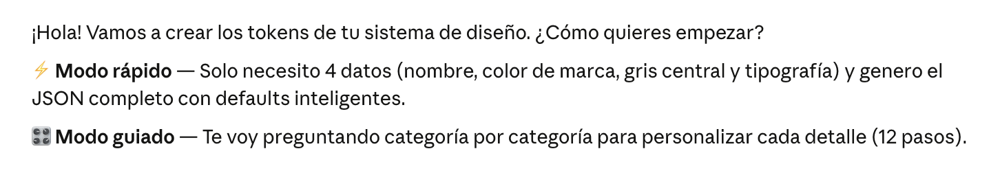

Design-tokens

El problema
Crear tokens de diseño coherentes es lento y propenso a errores. Pasar de un color de marca a un JSON válido con escalas perceptualmente uniformes, valores de accesibilidad WCAG/APCA y formatos HSL/OKLCH puede llevar horas. Y hacerlo bien —siguiendo la especificación del W3C Design Tokens Community Group— es territorio de especialista.
La solución
Un skill para Claude Code que actúa como generador interactivo de tokens W3C. Con tres datos (color de marca, gris base y tipografía) genera un sistema completo: paletas de color con escala OKLCH canónica, tipografía modular, espaciado, elevaciones, grid, motion, focus accesible y el nuevo material Liquid Glass de iOS 26.
Dos modos:
- Rápido (3 inputs → archivo completo).
- Guiado (12 pasos para control total).
El proceso de creación
El skill se define en un único archivo Markdown en .claude/commands/design-tokens.md. El reto principal fue la especificación del comportamiento: cómo calcular rampas de color perceptualmente uniformes, cómo estructurar el JSON según el spec W3C, qué preguntar y en qué orden, y cómo generar el showcase HTML sin dependencias externas.
Varias iteraciones para afinar: la escala OKLCH canónica, el sistema de referencias entre tokens ({spacing.gap.4}), la estructura de los tokens compuestos de tipografía, y las extensiones de accesibilidad por cada color literal.
El proceso de ejecución
Cuando se invoca "/design-tokens", Claude sigue el flujo del skill:
- Pregunta el modo (rápido o guiado).
- Recoge los inputs necesarios.
- Ejecuta un script Python internamente para hacer los cálculos de color (OKLCH → sRGB, WCAG, APCA) con precisión matemática.
- Escribe "{nombre}.tokens.json" y "{nombre}.showcase.html".
- Abre el showcase en el navegador con "open".
El showcase es HTML autocontenido que lee el JSON vía "fetch" y renderiza los tokens en vivo.
Resultados
- 339 tokens generados a partir de 4 inputs en modo rápido.
- Paletas de color con escala OKLCH canónica garantizando contraste consistente entre hues.
- Badges WCAG AA/AAA y valores APCA por cada color.
- Showcase navegable con 11 secciones: colores, tipografía, espaciado, elevaciones, grid, motion, Liquid Glass…
- Fichero JSON listo para importar en Figma, Style Dictionary o Theo.
Aprendizaje y Conclusión
Los skills de Claude Code son sorprendentemente potentes cuando la instrucción está bien especificada. El archivo Markdown es el producto: define el comportamiento, los cálculos, el formato de salida y el tono de la conversación.
El mayor aprendizaje: precisión en el prompt del skill importa más que en cualquier prompt conversacional . Cada ambigüedad se convierte en un token mal generado o en una pregunta innecesaria al usuario. Invertir tiempo en la especificación ahorra tiempo en cada ejecución posterior.
Showcase
Para un input en modo rápido de:
- Nombre: Luis DS
- Color primario: #870E46
- Color de acento: #41F6AB
- Color neutral: #869095
- Tipografía:Afacad (Google Fonts)
Se obtuvo el siguiente resultado:
- Color: 100 tokens
- Tipografía: 38 tokens
- Espaciado: 70 tokens
- Aspect ratio: 6 tokens
- Elevaciones (sombras): 7 tokens
- Bordes (width & radius): 12 tokens
- Grid and breackpoints: 30 tokens
- Focus: 6 tokens
- Motion: 16 tokens
- Shader: 54 tokens
- TOTAL: 339 tokens
Se supone:
- Secondary #008AA7 derivada automáticamente (primary hue +210° → teal)
- Acento #41F6AB usado tal cual (user-provided)
- Spacing base: 4px, escala estilo Tailwind (35 pasos)
- Border radius base: 8px (sm=4px, lg=12px, xl=16px…)
- Shadow base: #101828
- Motion: estilo sutil (duraciones ligeramente más largas)
- Semantic colors: defaults (más usados))
- Focus: WCAG 2.2 §2.4.11 (ring 2px, offset 2px)
- Liquid Glass: 3 variantes (default/thick/ultra-thin), iOS 26